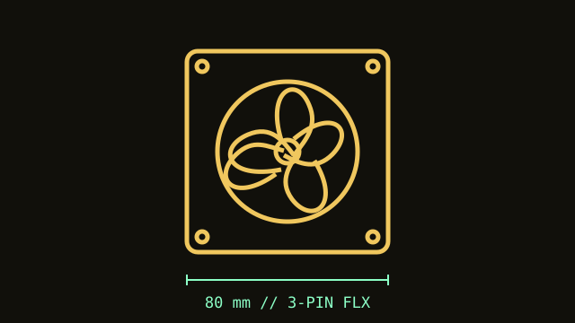

[ IDENTIFIED MODEL // NF-A8 FLX ]
Noctua NF-A8 FLX
An 80 mm fixed-voltage fan with supplied low-noise adapters for alternate speeds. This is the 3-pin FLX variant, not the separate PWM model.

Exact model: NF-A8 FLX. Its speed reduction is by the included adapters; it does not provide PWM control.
Specifications
| Frame | 80 × 80 × 25 mm |
|---|---|
| Speed / airflow / pressure / noise | 2000 RPM maximum; reduced to 1650 or 1200 RPM with the included adapters. Maximum airflow 50.4 m³/h. Maximum acoustic noise 16.1 dB(A). Static-pressure figure not listed in the cited product specification. |
| Bearing | SSO2 bearing |
| Connector / control | 3-pin fan connector; fixed-voltage control, with supplied low-noise adapters. Not PWM. |
| Electrical | 12 V DC rated; maximum input current 0.08 A. |
| Fit and host compatibility | Only fits mounts specifying an 80 mm square fan and 25 mm thickness. Confirm a matching case/radiator hole pattern and 3-pin electrical support; do not assume 80 mm radiator support from a larger radiator's dimensions. |
Installation
Connect to a supported 3-pin DC fan header and configure its voltage curve. Choose an adapter only after checking the resulting speed and the cooling demand; confirm clearance and fastener compatibility.
Manufacturer sources
- Noctua — NF-A8 FLX product pageExact FLX model, connector type, and product features.
- Noctua — NF-A8 FLX specificationsModel-specific frame, electrical ratings, and acoustic/performance data.